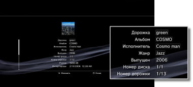

Музыка > Получение и редактирование информации об аудио CD
Получение и редактирование информации об аудио CD
Получение информации об аудио CD
После установки аудио CD система PS3™ автоматически подключается к Интернету и получает информацию о диске. Для получения информации о диске необходимо сначала принять условия пользовательского соглашения, отображаемого на экране.
Подсказки
- Информацию о диске можно также получить в меню параметров. Выбрав значок CD, нажмите кнопку
 и выберите [Получить информацию о CD]. Для завершения операции следуйте инструкциям на экране.
и выберите [Получить информацию о CD]. Для завершения операции следуйте инструкциям на экране. - Если информация не получена, при установке диска в систему подробные названия альбомов и дорожек отображаться не будут.
Редактирование информации об аудио CD
Возможно изменение полученной информации о CD. Выбрав значок аудио CD или дорожки, нажмите кнопку , затем выберите [Информация] в меню параметров. Выберите запись, которую требуется изменить.

Подсказки
- В случае, если информация о CD, автоматически полученная системой PS3™, неверна, измененную информацию можно передать по сети Интернет в компанию All Media Guide. Выберите значок аудио CD, нажмите кнопку , затем выберите [Отправить информацию о CD] в меню параметров.
- Компания All Media Guide обслуживает базу данных с информацией о компакт-дисках.
- При отсутствии данных в полях [Альбом], [Исполнитель] и [Жанр] передать информацию в компанию All Media Guide невозможно.
- You cannot change or send CD information for Super Audio CDs.
Примечание
компакт-диски Super Audio CD не могут воспроизводиться на некоторых системах PS3™. Подробнее см. в разделе [Типы воспроизводимых дисков].